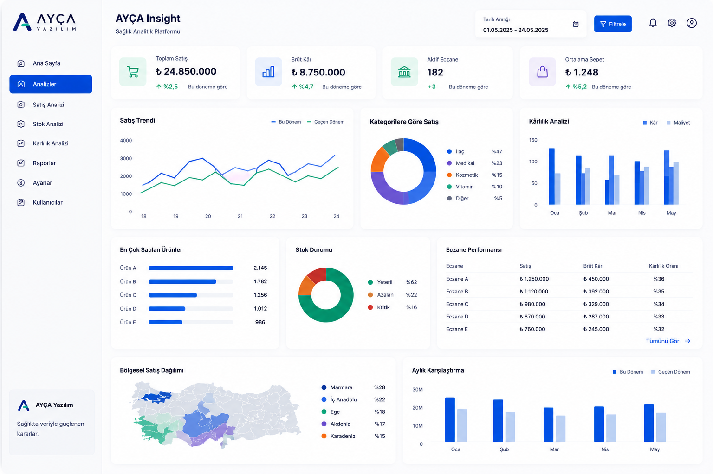

Eczanenizi Verilerle Yönetin
Satış, stok, kârlılık, risk ve yapay zeka destekli önerileri tek platformda birleştiren sağlık analitik çözümü.

Eczane Yönetimi İçin Analitik Katman
Satış Analizi
Ürün, kategori ve dönem bazlı satış trendlerini gösterir.
Stok Analizi
Kritik stok, yavaş dönen ürün ve sipariş önceliklerini belirler.
Kârlılık
Brüt kâr, kategori kârlılığı ve performans göstergelerini takip eder.
Hasta Sadakati
Hasta hareketlerini ve geri kazanım fırsatlarını analiz eder.
Risk Analizi
Stok, satış ve finansal riskleri anlaşılır skorlarla özetler.
AI CoPilot
Eczacının veriye dayalı karar almasını kolaylaştıran öneriler üretir.
AYÇA Insight, eczanenin finansal ve operasyonel verilerini tek ekranda birleştirir.
Ciro, stok, kârlılık, risk ve kategori performansını daha anlaşılır hale getirir. Amaç; eczacının veriye bakarak daha doğru karar almasını sağlamaktır.
Hospital Insight
AYÇA Insight altyapısı, sağlık kurumları ve hastaneler için karar destek ekranlarına genişletilmektedir.